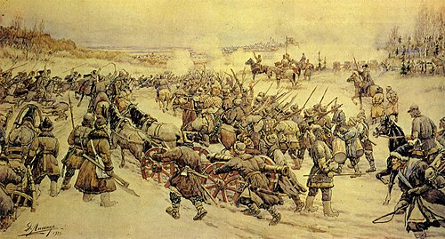
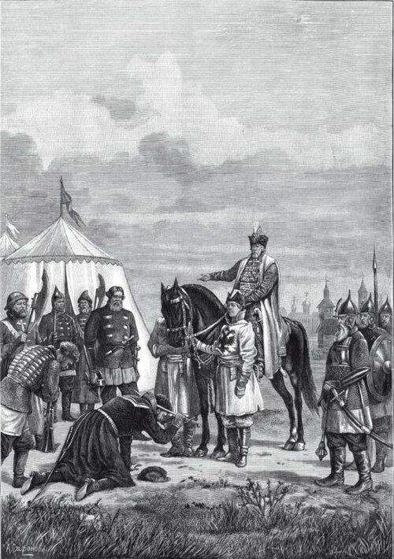
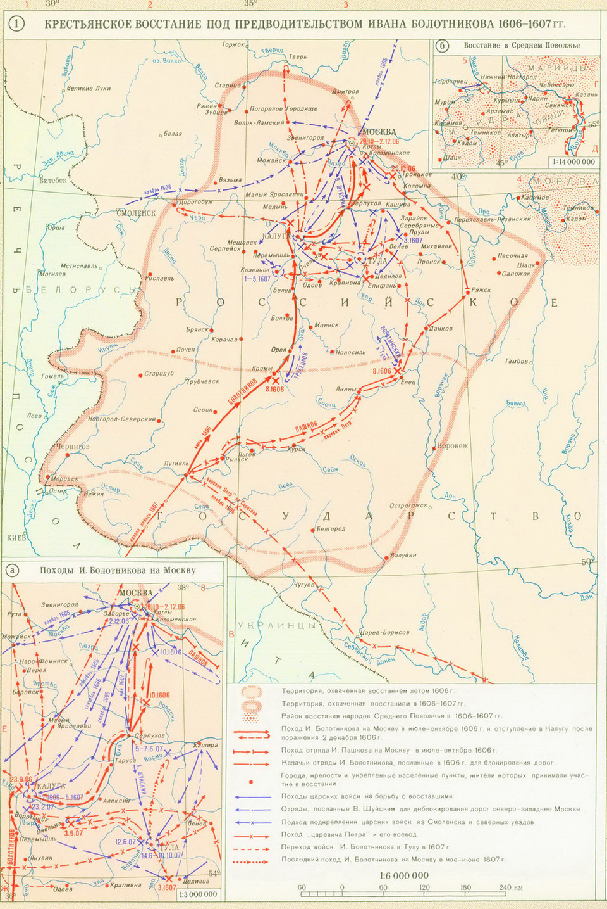

Восстание Болотникова
После убийства самозванца по Москве поползли слухи, что во дворце убили не Дмитрия, а кого-то другого. Они сделали положение Василия Шуйского очень шатким. Недовольных боярским царем было много, и они ухватились за имя Дмитрия. Одни — потому, что искренне верили в его спасение; другие — потому, что только это имя могло придать борьбе с Шуйским «законный» характер. Движение возглавил Иван Болотников. Он был в молодости военным холопом князя Андрея Телятевского. Во время похода попал в плен к крымским татарам. Затем был продан в Турцию, где стал галерным рабом. Во время морского сражения Болотникову удалось освободиться. Он бежал в Венецию. По пути из Италии на родину Болотников побывал в Речи Посполитой. Здесь из рук сподвижника Лжедмитрия I он получил грамоту о назначении его главным воеводой в «царском» войске. Поверив в «истинного царя», Болотников двинулся из Путивля на Москву. Осенью 1606 года, разбив несколько царских отрядов, повстанцы подступили к Москве и расположились в селе Коломенском. В лагерь Болотникова толпами стекались люди, недовольные царём Василием Шуйским. Осада Москвы продолжалась пять недель. Неудачные попытки взять город закончились тем, что несколько дворянских отрядов, в том числе крупный отряд Прокопия Ляпунова, перешли на сторону Василия Шуйского. В решающей битве у Коломенского в декабре 1606 года ослабленные войска Болотникова были разбиты и отошли в Калугу и Тулу. В Калуге Болотников быстро привёл в порядок городские укрепления. Подошедшее войско во главе с воеводами Василия Шуйского осадило Калугу, но потерпело жестокое поражение от восставших, возглавляемых князем Телятевским в битве на Пчельне, после чего деморализованные царские войска бежали из-под Калуги. Другим центром восстания стала Тула. На помощь Болотникову прибыл отряд из Поволжья, возглавляемый ещё одним самозванцем — «царевичем Петром», якобы сыном царя Фёдора Иоанновича. Василию Шуйскому вновь удалось собрать большое войско. Он смог сделать это благодаря серьёзным уступкам дворянству. В сражении на Восьме в июне 1607 года отряды Болотникова потерпели поражение. Их остатки укрылись за крепостными стенами Тулы. Осада Тулы длилась около четырёх месяцев. Убедившись, что Тулу невозможно взять при помощи оружия, Василий Шуйский приказал соорудить плотину на реке Упе. Поднявшаяся вода затопила часть города. В Туле начался голод. 10 (20) октября 1607 года Иван Болотников сложил оружие, поверив обещанию царя сохранить ему жизнь. Но Василий Шуйский жестоко расправился с руководителями движения. Болотникова сослали в Каргополь, где вскоре он был ослеплён и утоплен. «Царевич Пётр» был повешен. Однако большинство повстанцев было отпущено. Многие из них впоследствии примкнули к Лжедмитрию II.


